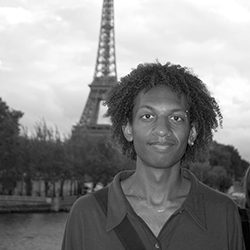
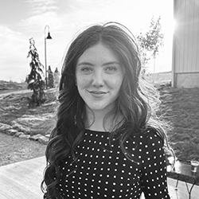

|
Rachel Pontious
Rachel Pontious is an librarian, archivist, artist, and educator with an MA in the History of Art and Design and an MLIS in Information Science from Pratt Institute, as well as an MFA in Painting from Cranbrook Academy of Art. Her research interests include the intersecting histories of art and ecology in post-industrial cities, queer archives, and artistic explorations of surveillance in American culture. Her passion for libraries is grounded in critical pedagogy and social justice. |
|
 |
Quadri Bates
Quadri is cool |

|
Samantha Woodard
Samantha Woodard is getting her Master's in Information and Library Science at Pratt Institute and has a BFA in Printmaking from SUNY Purchase. She is a native New Yorker and currently lives in Manhattan. When she is not in school or working on the Upper East Side, she is watching movies at IFC and Anthology Film Archives. Her main interests are in rare books and preservation. |
|
 |
Brooke Olsen
Brooke Olsen is a current library science student at the Pratt Institute and holds an undergraduate degree in comparative literature from American University. She is an information professional with a diverse background in academic libraries, independent bookstores, and publishing houses. She is interested in the intersections of privacy, access, and information freedom. |